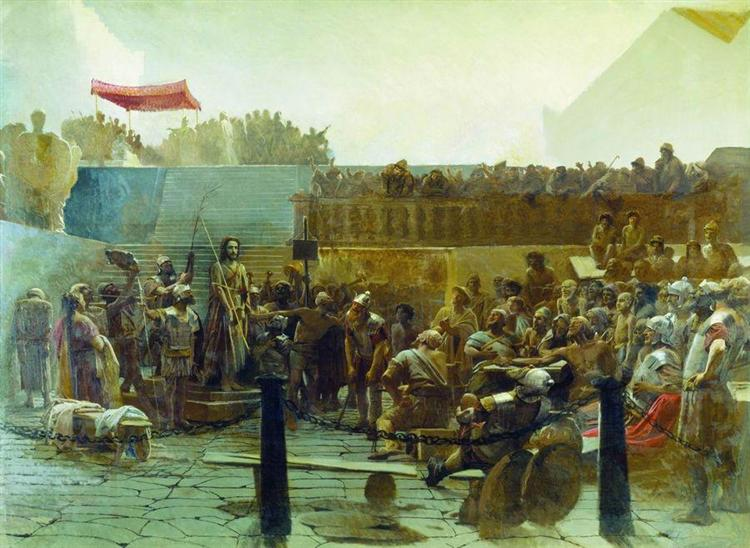

Хохот
На полотне-солдаты вывели Иисуса после бичевания на площадь.Здесь люди нарядили Христа в шутовского царя:надели на голову терновый венец.А потом оплевали и избили «царя Иудейского». Крамской говорил : «Непременно надо написать,то есть не собственно Христа,а ту толпу,которая хохочет во все горло».
Картина «Хохот» дополняла картину «Христос в пустыне»,был последним действием задуманной трагедии. Основная мысль Крамского-трагедия жизни тех высоких натур,которые добровольно отказываются от личного счастья и сознательно переходят «в стан погибающих за великое дело любви».